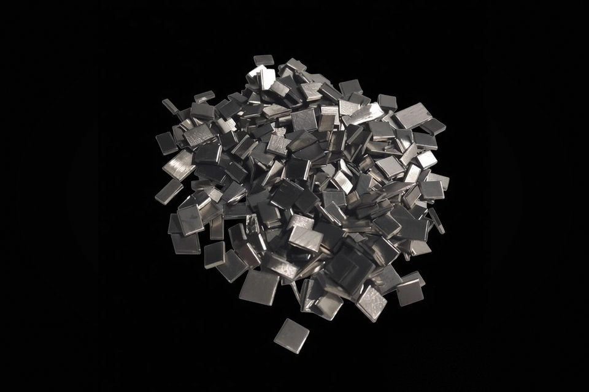

PVD Coating Materials / Evaporation Materials
Nickel Metal Granule
金属镍颗粒
Specifications
| Product Name | Nickel Metal Granule |
|---|---|
| Chinese Name | 金属镍颗粒 |
| Product Line | PVD Coating Materials |
| Category | Evaporation Materials |
| Formula / Composition | Ni |
| Purity | 99.99%~99.999% |
| Standard Size | 99.9%~99.99% |
| Packaging | 真空包装 |
| Customization | 是 |
Product Features
银白色不规则或圆柱形颗粒
은백색의 불규칙 또는 원통형 입자
Applications
金属镍薄膜具有良好的导电性，耐腐蚀性好、可塑性好，广泛应用于半导体和微电子产业，金属镍薄膜常用于制作MESFET器件的电极的关键材料。工业中，常在重掺杂的硅衬底上生长镍薄膜，再经过退火处理，形成镍硅化合物，从而减少金属与半导体接触的电阻率，提高器件性能。
Nickel films offer good electrical conductivity, corrosion resistance, and plasticity, and are widely used in semiconductors and microelectronics. Nickel thin films are often key electrode materials for MESFET devices. In industry, nickel films are commonly grown on heavily doped silicon substrates and annealed to form nickel silicide, reducing metal-semiconductor contact resistivity and improving device performance.
니켈 필름은 우수한 전기 전도성, 내식성 및 가소성을 제공하며 반도체 및 마이크로 전자공학에 널리 사용됩니다. 니켈 박막은 종종 MESFET 장치의 핵심 전극 재료입니다. 업계에서 니켈 필름은 일반적으로 고농도로 도핑된 실리콘 기판에서 성장하고 어닐링하여 니켈 실리사이드를 형성하여 금속-반도체 접촉 저항을 줄이고 장치 성능을 향상시킵니다.
RFQ Checklist